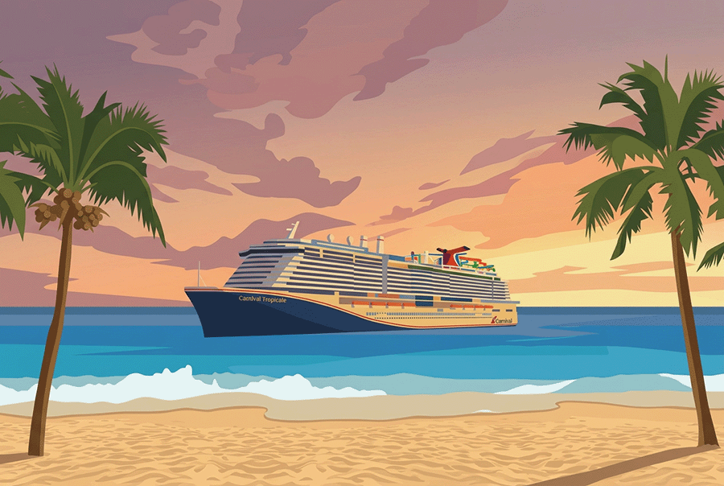

<section class="motion-hero" aria-label="Motion Studio featured project">
  <div class="motion-hero__grid" aria-hidden="true"></div>
  <div class="motion-hero__diagram motion-hero__diagram--left" aria-hidden="true">
    <span></span><span></span><span></span>
  </div>
  <div class="motion-hero__diagram motion-hero__diagram--right" aria-hidden="true">
    <span></span><span></span><span></span>
  </div>
  <div class="motion-hero__stage">
    <div class="motion-hero__window">
      <div class="motion-hero__bar" aria-hidden="true"><i></i><i></i><i></i><b>Motion Studio</b><span>Prototype / Internal</span></div>
      <div class="motion-hero__workspace">
        <div class="motion-hero__preview">
          
          <span class="motion-hero__scan" aria-hidden="true"></span>
        </div>
        <div class="motion-hero__controls" aria-hidden="true">
          <small>Motion region</small>
          <strong>Water</strong>
          <i></i><i></i><i></i>
          <span>Generate preview</span>
        </div>
      </div>
    </div>
    <span class="motion-hero__edge motion-hero__edge--side" aria-hidden="true"></span>
    <span class="motion-hero__edge motion-hero__edge--bottom" aria-hidden="true"></span>
  </div>
</section>
